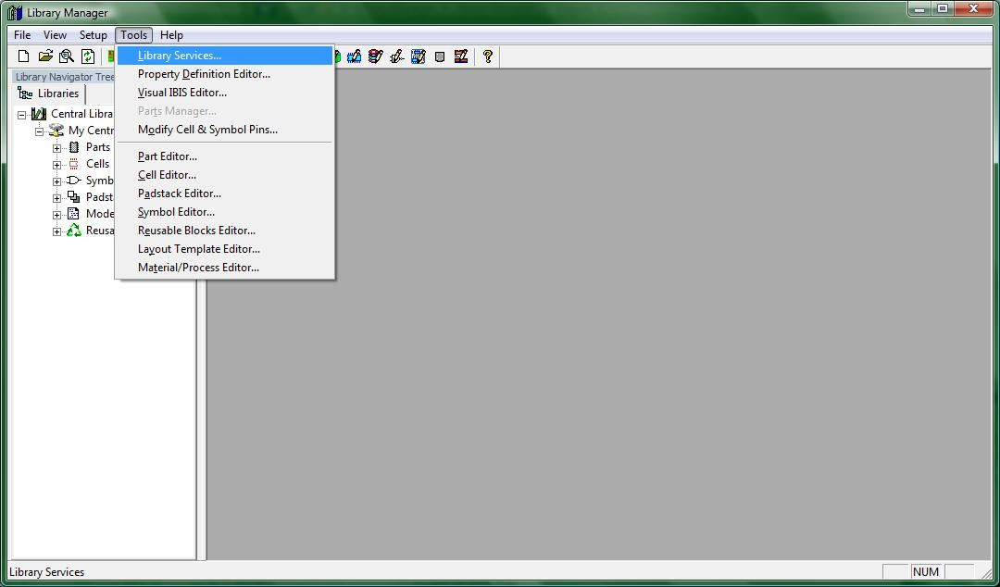
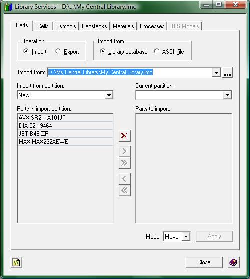

Import Files to Central Library:
This tutorial is important if you are going to need parts/cells/padstacks/symbols. It begins when you have started the Library Manager and have opened up your central library. Let there be no confusion. We are dealing with two libraries in this section: the one you are importing to and the one from which the imported material will be selected. It is important that you open the central library that you wish to import into --- the one you will be writing to --- when you first begin the session.
Everything you will need in order to import any of those files will be with the library services window. In order to open up the library services window click on the menu Tools -> Library Services… just like in the following image.

(1-library_services.jpg)
The following image shows the Library Services window

(2-lib_serv_window.jpg)
Let's take a quick tour. At the top of the window there are 7 tabs. These tabs select the part of the central library that you want to deal with. The content shown within each tab is essentially the same: A library (or ASCII file if not a symbol) to import from, two fields on the left and right sides of the window, and five buttons in between those fields.
Each field has a drop down menu that populates the list below it. The field on the left gets populated with information from the library you want to be import from. The field on the right gets populated with information from the library you have open.
The five buttons in between the two fields do the following actions, listed from top to bottom:
1. Delete button. This opens up another window to delete items from your library.
2. Moves one selected item from the partition in the library from which you are importing (left to right).
3. Moves all items from the partition in the library from which you are importing (left to right).
4. This button is used for the removal of one selected item to be imported (right to left).
5. This button is used for the removal of all selected items to be imported (right to left).
It is quite simple to import things into your library. There is a slight trick, however, in order for any import to work. If you are going to import a cell when your central library currently has none, you will need to create a partition for your cells BEFORE you can import anything or else the Library Services import function will fail. To learn about creating partitions, open up the partitions tutorial. Once you have at least one partition in either your parts, cells, or symbols section, you can continue with the rest of this tutorial.
If you require a Central library with parts / symbols / cells from which to import, you may use the central library provided with my example projects. Click this link to get a copy of the example Central Library.
After you have downloaded the central library and extracted it to a location you know, click the browse button for the “import from” field (the button is marked “…”) and find the central library I have provided you. If you choose to use another central library that is fine too.
Once you have found the central library you are going to use and clicked the "OK" button on the browse window, the left field drop down menu will be populated with partitions from that central library. By clicking the drop down menu and selecting a partition in that central library, the field below will then be populated with the parts inside that partition in the source library.
Once parts are displayed on the left column, the last thing you will need to do is to specify which partition you want your parts to be imported into. This is done by selecting the partition you desire in the right drop down box.
Once both partitions have been specified, you may start selecting parts from the left field by left clicking on the name of the parts and then using the second button (from the numbered list I gave earlier) to select individual parts to your central library (displayed on the right). If you would like all of the parts from the left field, click the third button. Once you have finished selecting all the parts that you would like, click on the “Apply” button on the bottom right of the window.
All parts that are transferred from the "source" library will now appear in blue text instead of black text. This lets you know that those parts appear in both libraries. This will be useful to note later if you will be obtaining parts from multiple libraries.